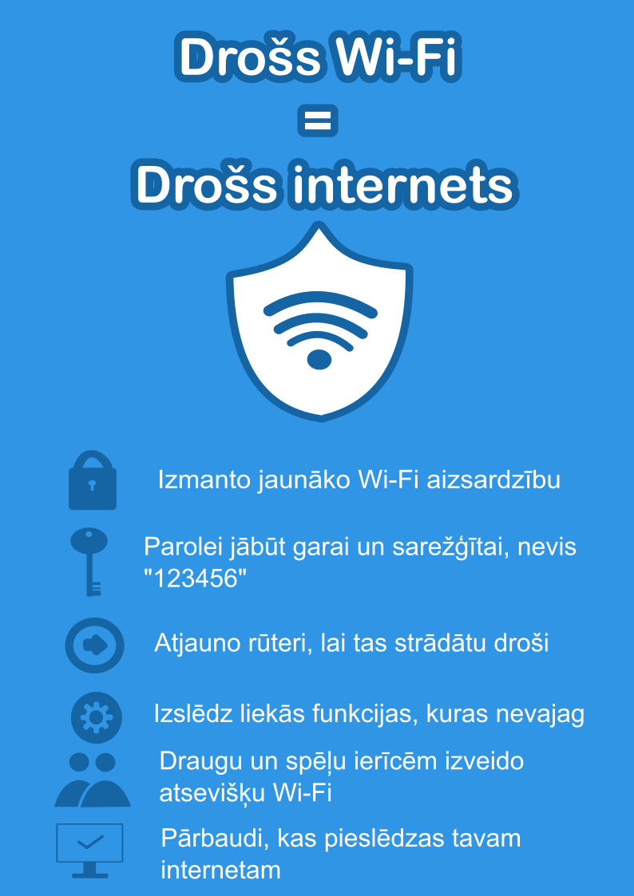

Kas ir Wi-Fi drošība?
Wi-Fi drošība attiecas uz metodēm un tehnoloģijām, kas aizsargā bezvadu tīklus no nesankcionētas piekļuves, datu zādzības un kiberuzbrukumiem.
Galvenie apdraudējumi
- Nesankcionēta piekļuve tīklam
- Datu pārtveršana (sniffing)
- Viltus piekļuves punkti (Fake Wi-Fi)
- Ļaunprogrammatūras izplatīšana
Drošības protokoli
WEP
Novecojis un nedrošs protokols.
WPA
Uzlabota drošība salīdzinājumā ar WEP.
WPA2
Standarts ar spēcīgu šifrēšanu (AES).
WPA3
Jaunākais standarts ar labāku aizsardzību.
Kā uzlabot Wi-Fi drošību
- Izmanto WPA3 vai WPA2 šifrēšanu
- Spēcīga parole (12+ simboli)
- Maini maršrutētāja noklusējuma paroli
- Atjaunini maršrutētāja programmatūru
- Izslēdz WPS funkciju
- Izmanto viesu tīklu

Drošība publiskajos Wi-Fi tīklos
- Neievadi sensitīvus datus
- Izmanto VPN
- Pārliecinies par HTTPS
- Izslēdz automātisko pieslēgšanos tīkliem